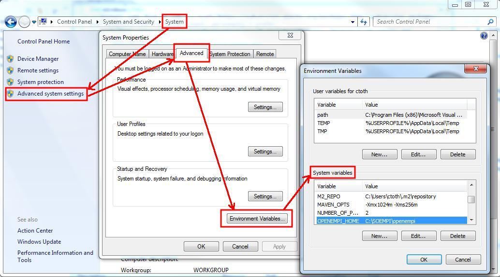

It should be set to the place where the "conf" directory of your SOEMPI resides. If you have the full source code you can use the configurations of that by setting the OPENEMPI_HOME to "openempi" subfolder (that subfolder contains the conf directory) within the SOEMPI root folder.
On Linux you can set the variable in /etc/environment file (OPENEMPI="/home/ctoth/SOEMPI/openempi"), but that will require a reboot, so typically a solution for user's own desktop machines. On servers a possibility is to pass a variable through the JVM variables using JBoss: add this to the run.conf's where the JVM parameters are added (JAVA_OPTS): -Dopenempi.home=/home/username/SOEMPI/openempi (given that your SOEMPI's source checked out to /home/username/SOEMPI/).
If you are on a server, it a possibility to place the conf files into $JBOSS_HOME/bin, and then set the JVM parameter respectively.On Windows: System > Advanced System Settings > Environment Variables...
TODO